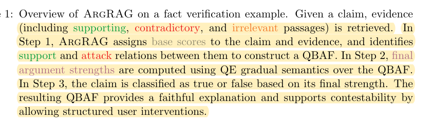
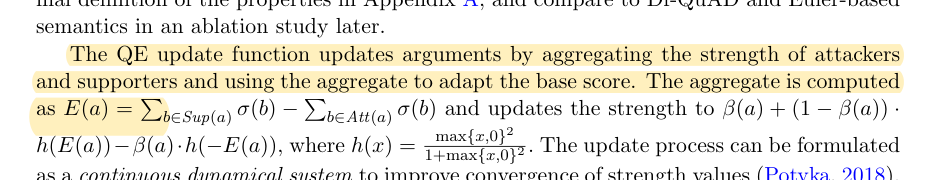
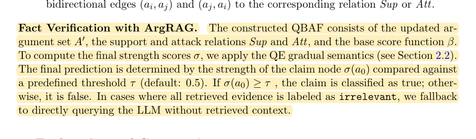

R11 · Rule and evidence algorithms
ArgRAG explains support and attack, but hard constraints cannot be averaged away
ArgRAG: Explainable Retrieval Augmented Generation using Quantitative Bipolar Argumentation
Yuqicheng Zhu et al. · 2025
NeSy 2025, PMLR 284
What the study investigates
Conventional RAG asks a model to synthesize several retrieved sources without making support, counterevidence, and the final conclusion fully transparent. ArgRAG represents these relationships explicitly.
How it was studied
Retrieved passages are organized into a quantitative bipolar argumentation graph, with support and attack relations and initial strengths. Defined argumentation semantics update those strengths and produce a judgment about the claim. Experiments compare generation, retrieval, and argumentation settings and expose paths through which evidence affects a conclusion.
Findings
The method supplies a recomputable way to combine evidence for fact verification. Graph calculation is deterministic once structure and weights are fixed, while structure extraction, evidence selection, and initial strengths still depend on a model or configuration.
Limits of the evidence
Numerous supporting arguments do not override a hard contraindication. Weighted strength is not an OSCE grading rule. A drug can be generally indicated and inappropriate for a particular patient at the same time; these are not necessarily contradictory versions of the same proposition.
How it informs DualGraph-OSCE
Support, counterevidence, and exceptions can guide evidence retrieval, but the EGJ engine checks applicability and hard constraints before judgment. In the onychomycosis station, indication, an HFrEF restriction, and a concomitant-drug interaction belong to different condition nodes. Evidence should be compared only when it concerns the same patient, regimen, time, and proposition.
Where to cite it
Related work: explainable retrieval. Method: distinguish hard rule execution from weighted argumentation.
Possible manuscript wording
Quantitative argumentation graphs make support and attack explicit. Pharmacy stations also require conditional contraindications to remain distinct from general supporting evidence, preventing evidence quantity from overriding safety constraints.
[R11·1]This is a manuscript-specific paraphrase, not a quotation from the source. The excerpts below define what the citation supports. The proposed method and its expected benefits are not findings of the cited paper.
Source passages and precise locations
Page numbers refer to physical pages in the saved original PDF, including any repository cover sheets. Compilation page numbers are listed separately. Yellow highlighting marks the passage used for the argument.
R11-E1Evidence retrieval and argumentation workflow
Original PDF page 2. Highlight compilation page 148. The highlight identifies the passage used here; consult the full original page for its context.

R11-E2Argumentation semantics
Original PDF page 4. Highlight compilation page 150. The highlight identifies the passage used here; consult the full original page for its context.

R11-E3Fact decisions and fallback conditions
Original PDF page 5. Highlight compilation page 151. The highlight identifies the passage used here; consult the full original page for its context.
